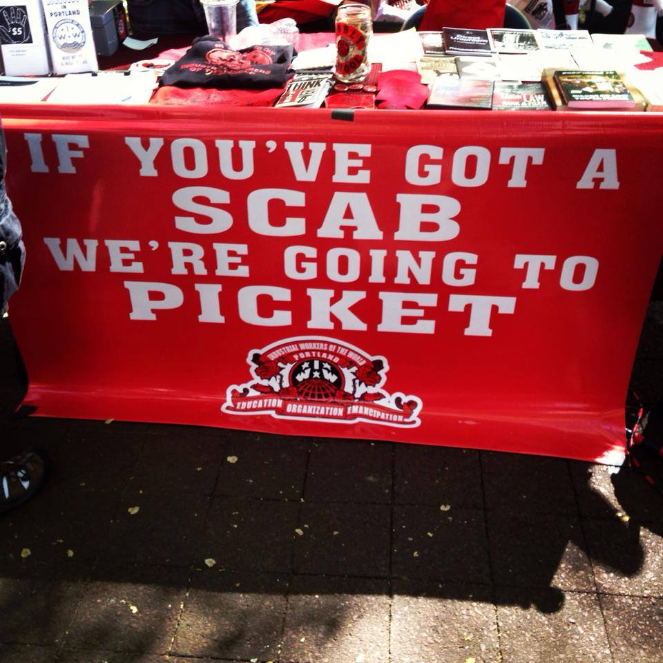

This is the news page for all our membership branches. Click on a Branch title to get the latest news for a particular Branch, or browse this page for news from every Branch. To get an overview about our contact info, news and events, please visit our
Branch home page.
Submitted on Wed, 05/07/2014 - 6:19pm
By the Twin Cities IWW

On May 4th 2014, members of the Twin Cities IWW and supporters withstood a violent and deliberate attack on a picket of Sisters’ Camelot, whose canvass workers went on strike in March of 2013 and have endured vicious union-busting efforts from the organization ever since. After some twenty minutes of peaceful picketing, Sisters’ Camelot supporters organized an escalating series of attacks and attempts to break the picket line, eventually tackling an IWW member to the ground and beating him until other Wobblies pulled them away.
Submitted on Wed, 05/07/2014 - 6:12pm
The International Solidarity Commission (ISC) of the Industrial Workers of the World (IWW) sends our solidarity to all workers occupying the Greif-Sanjut factory, a division of the US enterprise, Greif, since February 10. We condemn the police and gendarmerie raid in the early daylight hours of April 10. Due to this attack many workers have been taken into custody and abused, including, Mehmet Ali Karabulut, who was reporting for the left publication Kizil Bayrak.
The Greif factory, a manufacturer of packaging products, has been occupied by 500 workers who are members of the Confederation of Revolutionary Trade Unions in Turkey (DİSK). Workers at the Greif factory are struggling for several issues. The most urgent problems are: low wages, which are currently below the poverty line; 44 subcontractor companies working for the Greif bosses, and excessive workplace accidents. Workers, including the core workforce and subcontracted workers, decided to occupy the factory after the managers refused to negotiate concerning their problems.
Submitted on Tue, 05/06/2014 - 7:07pm
Photos from IWW actions across the globe. Want to see your group's photo below? Send it to iw@iww.org!

Portland IWW banner (Read "Wages of Class War: Reflections on Portland’s May Day")
Click here for all the photos!
Submitted on Wed, 04/30/2014 - 10:46pm
 By Staughton Lynd
By Staughton Lynd
This article originally appeared in the May 2014 Industrial Worker
On May 1, 1886, the first general strike in U.S. history brought workers into the streets on behalf of one simple demand: an eight-hour working day. Their anthem was:
“We want to feel the sunshine;
We want to smell the flowers;
We’re sure (that) God has willed it
And we mean to have eight hours.
We’re summoning our forces from
Shipyard, shop and mill;
Eight hours for work, eight hours for rest,
Eight hours for what we will.”
As is the case in the movement of low-wage workers today, the movement for eight hours was characterized by skilled and less-skilled workers, and workers in different trades, making common cause.
Submitted on Thu, 04/10/2014 - 4:53pm
 From the Bread and Roses Workers Cultural Center
From the Bread and Roses Workers Cultural Center
Featuring: Way Down in the Hole and The Ludlow Massacre, video documentaries, and comments by union members and Scott Martelle, author of Blood Passion, The Ludlow Massacre and Class War in the West.
When: Friday, April 18, 7-10 p.m.
Where: The Mercury Café, 2199 California St., Denver
Free Admission
FMI: http://workersbreadandroses.org/ludlow.html
The Ludlow Massacre from the coal miners’ point of view is the theme of an evening program in central Denver on the occasion of the 100th anniversary of the Ludlow Massacre.